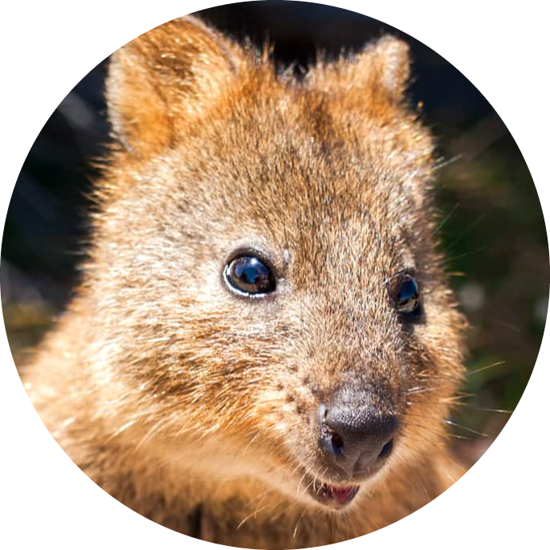

|  |
QuokkaThe quokka, also known as the short-tailed scrub wallaby, is a small macropod about the size of a domestic cat. |
Like all other species in the Macropod family, quokkas are herbivores. They eat a wide variety of vegetation, ranging from shrubs, leaves, and bark, to grasses.
They will also steal “people food” from stores, especially when fed by tourists. This is highly discouraged, as human food is unhealthy for these cute little thieves.
These animals are nocturnal, which means they are most active at night. They roam in search of food, and
interact with others of their kind. Dominant males defend territories, and those territories often overlap with the range of female animals.
Gatherings of 25-150 animals are frequently seen around water sources.